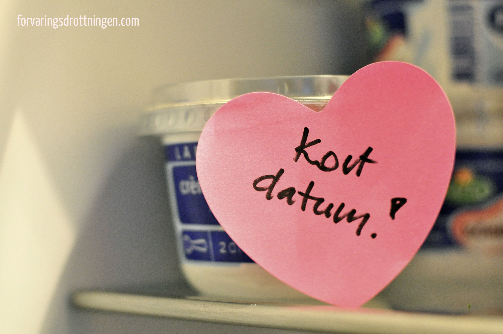
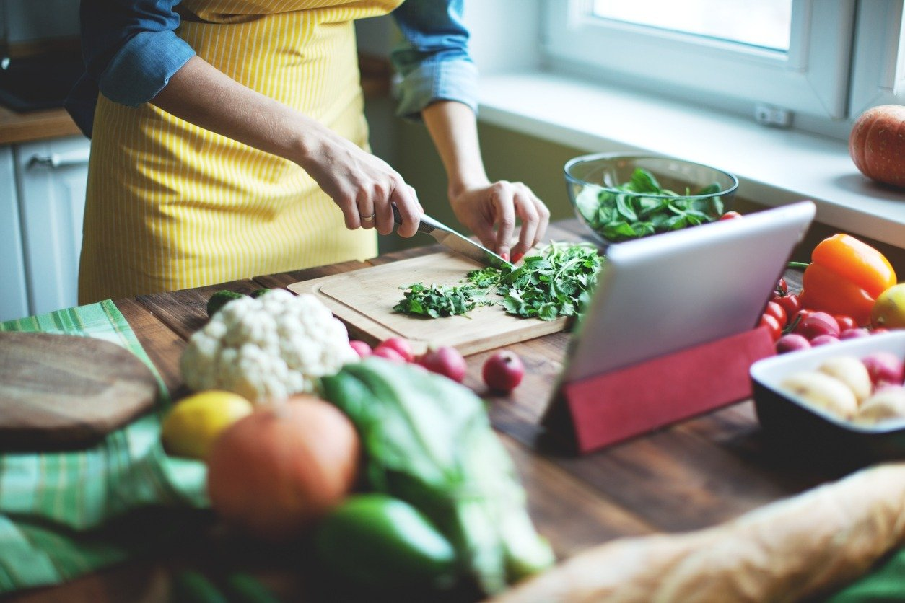

Bäst före betyder inte Farligt efter
Ett enkelt sätt att minska svinnet är därför att först titta, lukta och
smaka på maten. Våga lita på dina sinnen – om maten verkar
okej går den bra att äta!

Välj mat med kort Bäst-före datum
bli dåliga? Avse en separat hylla för det! En akuthylla helt enkelt.
Så fort du upptäcker att det börjar bli bråttom med att äta upp något
innan det hinner bli dåligt så ställer du det på just den hyllan. På det
sättet har du allt som det är bråttom att äta upp samlat på ett ställe.

Frys in din mat
Dessutom kan du dra ner på matsvinnet. Kött och fisk går också bra
att frysa.I frysen växer inga bakterier så det är inte farligt att äta
mat som legat länge i frysen. Däremot kan fettet härskna vilket gör att
maten smakar illa.
.jpg)
Planera dina måltider
hur mycket tid du vill lägga åt matlagning under veckan. Vill du äta
husmanskost, mer vegetariskt, sallader eller mustiga grytor m.m.
Planera tillsammans med familjen. På så vis har du en bra grund att
utgå från när du sätter igång.
